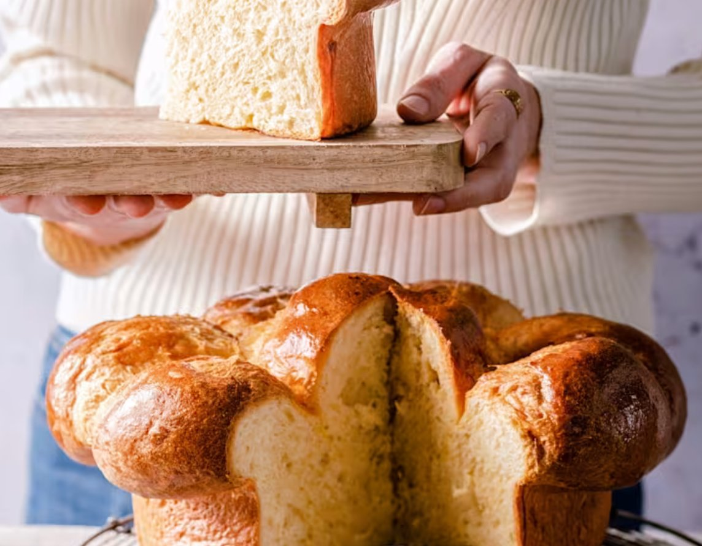

Brioche
Ingrédients
8×
- 130 g de lait
- 10 g de levure boulangère sèche
- 500 g de farine T55
- 4 œufs
- 10 g de sel
- 50 g de sucre
- 200 g de beurre doux
- 1 jaune d'œuf

Préparation
Étape 1
Mettre 130 g de lait, 10 g de levure boulangère sèche, 500 g de farine T55, 4 œufs, 10 g de sel et 50 g de sucre dans le bol. Pétrir mode Pétrin/5 min.
Étape 2
Ajouter 200 g de beurre doux et pétrir mode Pétrin/15 min : la pâte doit être filante.
Étape 3
Transvaser dans un récipient fariné, couvrir d’un torchon et laisser reposer 1h au réfrigérateur.
Étape 4
Sur un plan fariné, rabattre la pâte et la diviser en 8 boules. Les disposer en marguerite dans un moule à manqué (Ø 24-26cm).
Étape 5
Laisser pousser 2h à l’abri des courants d’air.
Étape 6
Préchauffer le four à 180ºC. Badigeonner avec 1 jaune d'œuf battu dans un peu de lait.
Étape 7
Cuire 20min à 180ºC, puis 25min à 160ºC.
Résumé
130 g de lait
10 g de levure boulangère sèche
500 g de farine T55
4 œufs
10 g de sel
50 g de sucre
Pétrir mode Pétrin/5 min
200 g de beurre doux
pétrir mode Pétrin/15 min
laisser reposer 1h
diviser en 8 boules
Laisser pousser 2h
1 jaune d'œuf
Préchauffer 180ºC Badigeonner
Cuire 180ºC 160ºC